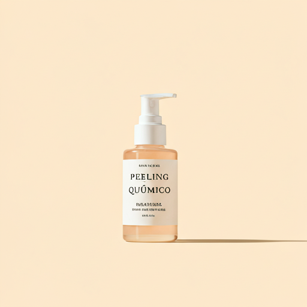

"O envelhecimento é um processo contínuo, mas o ritmo em que ele ocorre na nossa pele pode ser gerenciado de forma inteligente. Não se trata de paralisar o tempo, mas de ensinar suas células a recuperarem o colágeno perdido."
A busca pela juventude e vitalidade sempre guiou os tratamentos estéticos. No entanto, o paradigma mudou. Hoje, não buscamos mais esconder os sinais do tempo adicionando volume excessivo ou modificando os traços originais. A estética da atualidade, a verdadeira estética de alto padrão, foca na biologia da própria pele.
Mais do que preencher: a era do bioestímulo
Durante muito tempo, quando os pacientes se queixavam da perda de sustentação (vulgarmente conhecida como derretimento facial) ou daquelas rugas que insistem em marcar mesmo sem movimentação, a principal arma era o preenchimento com ácido hialurônico. Funciona? Sim, magistralmente para devolver contorno e estruturação óssea simulada. Mas não melhora, a longo prazo, a usina de produção celular da pele.

É aqui que entram os bioestimuladores de colágeno (como Sculptra®, Radiesse® e Ellansé®). Eles são substâncias injetáveis, perfeitamente biocompatíveis (nosso corpo não rejeita) e biorreabsorvíveis (nosso corpo dissolve e elimina com o tempo).
Por que eles são considerados uma revolução estética?
- Ação "Invisível": Imediatamente após a aplicação, você percebe pouquíssima diferença estética. A mágica ocorre nas semanas seguintes. O produto injetado causa uma inflamação subclínica, intencional e controlada, avisando as células (fibroblastos) que elas precisam produzir colágeno para curar aquela região.
- Progresso Contínuo: Aos 30 dias, você nota a pele mais espessa e iluminada. Aos 60, o contorno facial fica mais definido, pois a pele ganha tração e "cola" novamente nas camadas profundas. Eaos 90 dias atingimos o pico produtivo. Você rejuvenesce mês a mês, sem que os outros saibam identificar exatamente o que você fez.
- O Banco de Colágeno: A partir dos 30 anos (e em especial durante o climatério e a menopausa), perdemos em torno de 1% de nosso colágeno anualmente. Bioestimular não é "gasto", é formação de "banco de colágeno". Prevenimos a queda abrindo uma poupança de juventude antes do prejuízo visual ocorrer.
A personalização faz toda a diferença
Nenhum rosto é igual a outro. A técnica exige excelência no planejamento anatômico. Qual a profundidade exata da injeção? Usaremos qual cânula? Qual vetor (direção) é ideal para suspender a lateral do seu rosto, que caiu de um jeito muito singular?
Essas respostas garantem um resultado natural e livre da temida hipercorreção.
Esta é a evolução da dermatologia e da estética orofacial avançada. Uma medicina de saúde da pele, muito mais do que estética efêmera.
Dra. Lara Pires
CRM 000.000 / RQE 0000
Especialista em medicina estética com foco em procedimentos minimamente invasivos de resultados naturais. Apaixonada por devolver autoestima através do mapeamento anatômico Full Face e ciência da longevidade.
Gostou deste conteúdo?
Faça uma avaliação global da sua pele. Agende sua consulta para desenvolvermos um plano de tratamento focado exatamente nas suas necessidades.
Agendar Avaliação